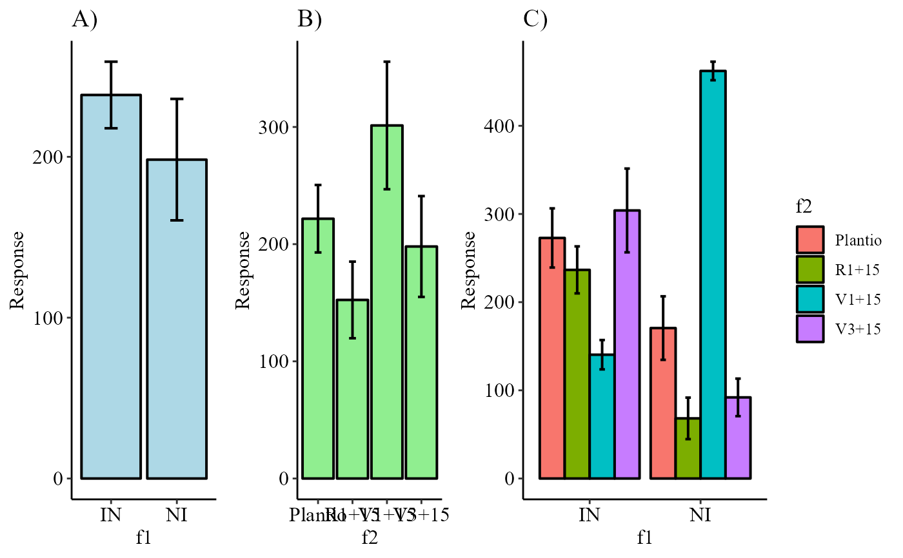

desc2fat.RdIt performs the descriptive analysis of an experiment with two factors of interest.
desc2fat(f1, f2, response, ylab = "Response", theme = theme_classic())
| f1 | Numeric or complex vector with factor 1 levels |
|---|---|
| f2 | Numeric or complex vector with factor 2 levels |
| response | Numerical vector containing the response of the experiment. |
| ylab | Variable response name (Accepts the expression() function) |
| theme | ggplot2 theme (default is theme_classic()) |
The function returns exploratory measures of position and dispersion, such as mean, median, maximum, minimum, coefficient of variation, etc ...
Gabriel Danilo Shimizu, shimizu@uel.br
Leandro Simoes Azeredo Goncalves
Rodrigo Yudi Palhaci Marubayashi
#> #> #>#> #> #>#> #> #>#> #> #>#> #> #>#> #> #>#> #> #>desc2fat(f1,f2,resp)#> #> ----------------------------------------------------------------- #> general description #> ----------------------------------------------------------------- #> Media Mediana Minimo Maximo Variancia Desvio CV #> [1,] 218.35 185 32 492 18474.95 135.9226 62.24987 #> #> ----------------------------------------------------------------- #> Interaction #> ----------------------------------------------------------------- #> $Mean #> Plantio R1+15 V1+15 V3+15 #> IN 272.8 236.6 140.4 304 #> NI 170.6 68.2 462.2 92 #> #> $Median #> Plantio R1+15 V1+15 V3+15 #> IN 300 222 161 258 #> NI 136 48 453 79 #> #> $Min #> Plantio R1+15 V1+15 V3+15 #> IN 163 174 83 196 #> NI 98 32 438 46 #> #> $Max #> Plantio R1+15 V1+15 V3+15 #> IN 339 335 172 468 #> NI 284 160 492 171 #> #> $Variance #> Plantio R1+15 V1+15 V3+15 #> IN 5628.7 3550.3 1382.8 11286 #> NI 6489.8 2771.2 553.2 2266 #> #> $SD #> Plantio R1+15 V1+15 V3+15 #> IN 75.02466 59.58439 37.18602 106.23559 #> NI 80.55929 52.64219 23.52020 47.60252 #> #> $`CV(%)` #> Plantio R1+15 V1+15 V3+15 #> IN 27.50171 25.18360 26.48577 34.94592 #> NI 47.22116 77.18796 5.08875 51.74187 #> #> #> ----------------------------------------------------------------- #> f1 #> ----------------------------------------------------------------- #> Mean Median Min Max Variance SD CV(%) #> IN 238.45 226 83 468 8571.629 92.58309 38.82705 #> NI 198.25 123 32 492 28500.092 168.81970 85.15496 #> #> ----------------------------------------------------------------- #> f2 #> ----------------------------------------------------------------- #> Mean Median Min Max Variance SD CV(%) #> Plantio 221.7 227.5 98 339 8287.344 91.03485 41.06218 #> R1+15 152.4 167.0 32 335 10686.933 103.37762 67.83309 #> V1+15 301.3 305.0 83 492 29625.789 172.12144 57.12627 #> V3+15 198.0 183.5 46 468 18507.556 136.04248 68.70832 #> #> ----------------------------------------------------------------- #>